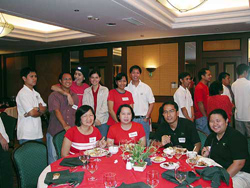

|
Teambuilding
Committee : Updates
TeamBuilding
Committee updates
by Ryan Salvanera and Celine Rivera
System
Christmas Party:
An Event To Remember
by Glen Bertulfo
The first ever System-wide Information Technology
Center (ITC) Christmas Party, one of the most memorable events
last year, was held at the Angelo King International Center.
Information
Technology Personnel (ITP) from the De La Salle System Schools
such as Professional Schools, Inc. (PSI), College of St. Benilde
(CSB), Dasmariñas, Health Sciences Campus (HSC) and
Santiago Zobel School gathered last December 14. They engaged
in friendly competition in the different parlor games and
bingo. PSI rendered the lone performance for the day. They
serenaded the crowd with a Christmas song.
Hopefully,
this will be an annual event to propel ITP interaction so
that solid harmony and camaraderie will be achieved between
IT Centers. The organizing committee is appreciative of the
support shown during the preparation for the said activity.
It was truly worth-remembering.
View
more System Party pictures >>>
TGIH/TGIW
SMO, PRIO/OD, DAO/DO and CFO have each had their share of
activities held for October, November, December and January.
These activities included Bingo, Film showing, Charade, Connect
ka Dyan, Lower/Higher and Videoke Challenge. There were prizes
for the winners and of course... the much awaited food.
ITC Christmas Party
Even with the Joint ITC System Christmas Party, we wouldn't
let the season pass without having a party of our own. The
Christmas Party committee had a monito/monita game with the
revelation coninciding with the DAO/DO TGIW. The award for
"one best who exemplified the theme of Christmas"
went to Rina Alano. According to Bobby de Jesus, she's always
the first to give to her baby monito. The 1st place for the
"Best in Lantern" contest went to SMO for 'their
condiments Christmas Tree', 2nd place went to PRIO for their
'cleaners' Christmas Tree'. Docu Office was in 3rd place for
their 'sinamay & stained glass-inspired Christmas Tree'.
ITC Choir
The ITC Choir continues to sing for the academic community
in the mass on thursdays. There were times during the term
when the choir was invited to sing for other events. It even
rendered a Christmas Song in the ITC System Christmas party.
For this term, the Teambuilding Committee will be busy again
with the following activites.
Sports Fest
Preparation is in the can for the coming sports fest: system
and DLSU Manila. The system sports fest is scheduled on Feb
22, Mar 1 and Mar 8. The events include volleyball, basketball
and fun games. The elimination games will be held in DLSU
Manila and the finals will be in Dasmarinas. The DLSU Manila
Sports Fest will be on Mar 15. The events include volleyball,
basketball, bowling and badminton. The list of players have
been prepared and players have had their measurements taken.
Planning Workshop (outing)
This is tentatively scheduled on April 25 or May 9. A one-day
affair is planned this year so we could get a 100% attendance.
The committee will be having a site visit at Wonder Island
in Laguna to see the place and inform the ITPs of the amenities,
recreational facilities that could be found there.
|